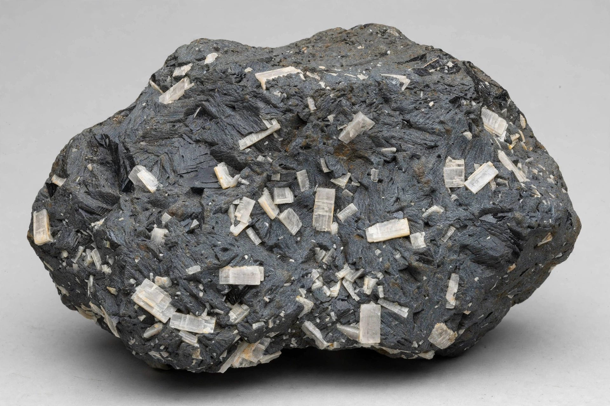

Andesite is a volcanic rock of intermediate composition, with an aphanitic to porphyritic texture. In a general sense, it is an intermediate type between basalt and rhyolite. It is fine-grained (aphanitic) to porphyritic in texture, and is composed predominantly of sodium-rich plagioclase plus pyroxene or hornblende.
| Andesite | |
|---|---|
| Type | Igneous, volcanic |
| Composition | Intermediate; ~52–63% SiO2 |
| Minerals | Plagioclase, pyroxene, hornblende |
| Intrusive equivalent | Diorite |
Andesite is the most common volcanic rock of island arcs and continental margins above subduction zones, and it is named after the Andes mountain range of South America, where it is abundant. Andesitic magma is moderately explosive in behaviour: its relatively high viscosity and volatile content produce stratovolcanoes with alternating lava flows and pyroclastic deposits.
Andesite typically contains phenocrysts of plagioclase feldspar, pyroxene and hornblende set in a fine-grained groundmass. Its silica content (52–63 wt%) places it between basalt (less silica) and dacite and rhyolite (more silica). On the TAS classification diagram it occupies the O2 field.
Andesite line: in the Pacific Ocean, the "andesite line" separates andesitic and basaltic volcanism of island arcs from the deeper basaltic volcanism of the ocean basin. Major andesitic volcanic chains include the Andes, the Cascades, the Japanese islands, Indonesia and the Caribbean Lesser Antilles.
Andesite — recreated from memory.